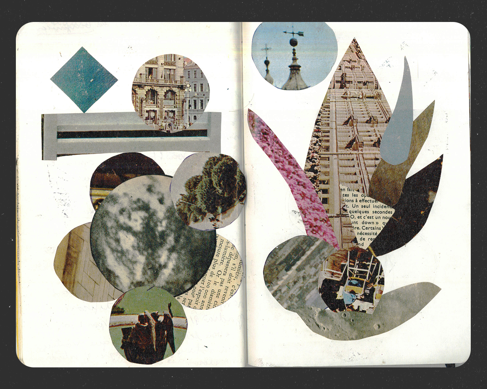

Projeto de pesquisa autoral em design computacional, renomeado de "type-comportments" através de uma sessão formal de crítica de design. O nome "Tipo Sensível" foi escolhido pelo duplo sentido — tipografia e "tipo de coisa".
Construído com p5.js, o projeto explora sistemas generativos aplicados à tipografia — investigando como forma, movimento e regra computacional podem gerar comportamento tipográfico inesperado.
Ao longo dos experimentos, emergiu uma taxonomia própria em três níveis — Partícula, Campo, Forma — cada um representando uma escala diferente de comportamento tipográfico.
Publicado como série viva, com referências conceituais tratadas como "companhias de percurso" — o projeto segue em expansão, um território de experimentação formal, não uma entrega fechada.
Conheça o Tipo Sensível.01 / 05
Tipo Sensível — peça 1